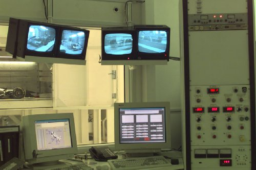

| designed |
| home page |
| Data grids are inherently distributed systems that tie together data and compute resources. Researchers rely on the data grid to support all aspects of data access and data manipulation. The requirements for a data handling system can be expressed as "transparencies" that hide grid implementation details. The Data Access working group will seek common implementation practices for creating data handling systems. Data Access Functionality Requirements The end-to-end services are implemented as middleware that hide the complexity of the diverse distributed heterogeneous resources that comprise data and compute grids. |
|  | Not so surprisingly on time delivery improved as inventory went down. AlliedSignal, a manufacturer of jet engines, located in Phoenix AZ. Coordinated the design of an automated supplier replenishment pull system for one of the production cells. The system utilized the legacy (MACPAC) inventory and demand forecast systems that dynamically recalculated kanban requirements for raw materials. The trigger to deliver raw materials came from the weekly replenishment kanban report. |